| 日付 | 2009年8月15日（土） - 2009年8月22日（土） | ||||||||||||||
|---|---|---|---|---|---|---|---|---|---|---|---|---|---|---|---|
| 山域 | 北海道の山 | ||||||||||||||
| メンバー | 単独 | ||||||||||||||
| 山行形態 | 7泊8日テント泊 | ||||||||||||||
| アクセス | 電車、飛行機、バス | ||||||||||||||
| ルート (Map) |
|
3日目
朝起きて外を見てみると、空は厚い雲に覆われていて小雨が降っている。
期待した展望は広がらない。
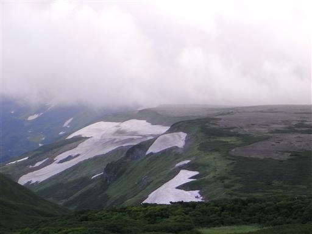
5:53 カッパを着て白雲岳避難小屋を出発する。
まずは忠別岳方面を目指す。
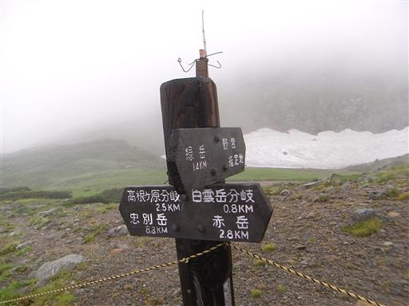
比較的人通りの多い登山道だとは思うが、
両側からハイマツが覆いかぶさって歩きにくい。
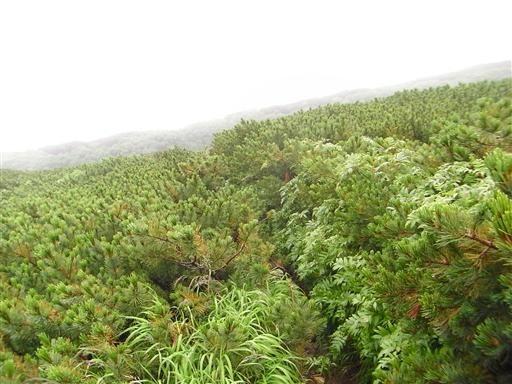
空を見上げると、時々青空がのぞく。
ここから天気が好転することを期待だ。
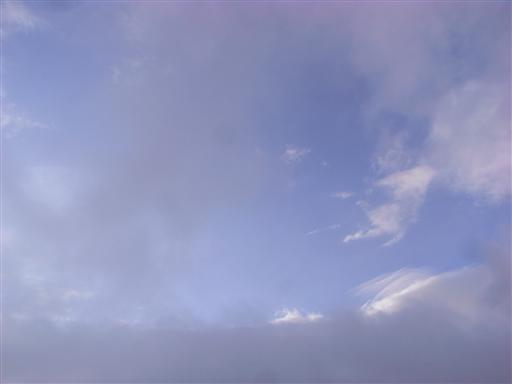
雨はだんだんと激しくなり、登山道は水溜りだらけだ。
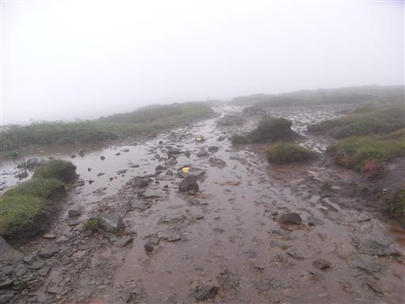
ここから脇に下っていく登山道は熊出没中のため通行禁止。
いかにも北海道の山らしい。
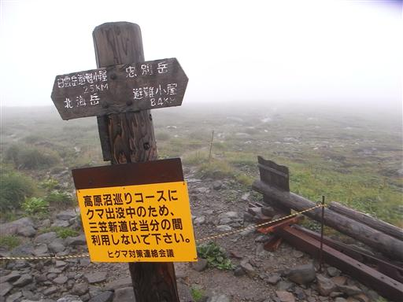
立ったハイマツ地帯の中を歩いていく。まるでジャングルだ。
ハイマツなのだから、名前のとおり這ってほしい。
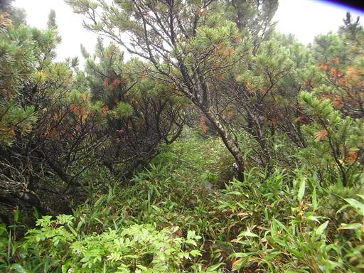
しばらく行くと、完全に登山道が水没している。
まるでアマゾンだ。舟でも浮かべたくなってくる。
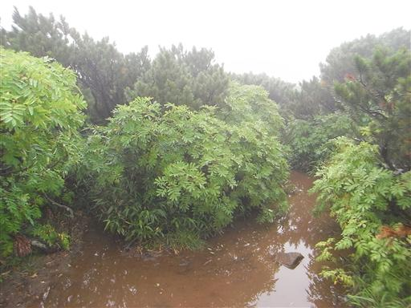
リシリリンドウ。濃い紫色の美しい花だ。
まさかこの花に出会えるとは思わなかった。

登山道に木道が現れる。もう少し早く現れてほしかった。

どこまでも広がるだだっ広い大地。
ここで暴風雨に襲われたら逃げ場はなさそうだ。
幸い今日は雨は強いが風は弱い。
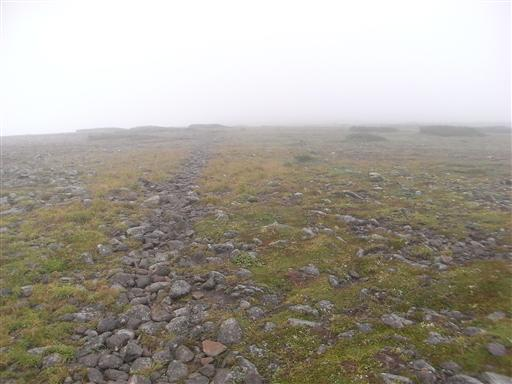
眼下に忠別沼が見えてくる。
平らな地形からか、この縦走路にはこのような池がいたるところにある。
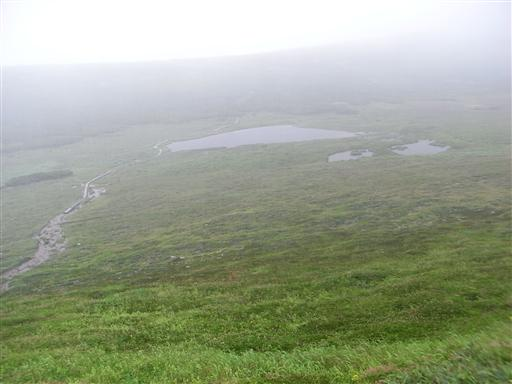
登山道脇に咲くリンネソウ。
小さくて目立たない花だが、この辺りではたくさん見られる。
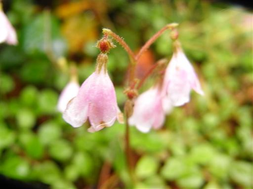
9:17 忠別岳山頂到着。標高1962m。
特に山という感じではなく、縦走路の途中という感じだ。
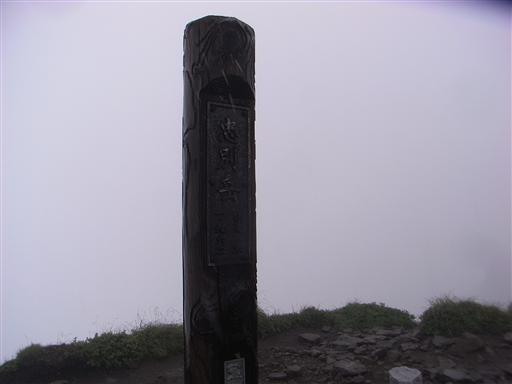
眼下に忠別岳避難小屋が見える。
これだけ離れた場所にあると、わざわざ立ち寄るのも面倒なのでスルーする。
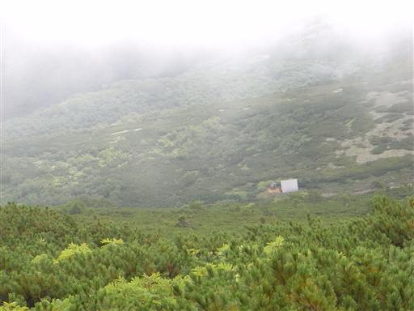
どこまでも続くハイマツの海。
天気がよければすばらしい展望が広がるところだろう。
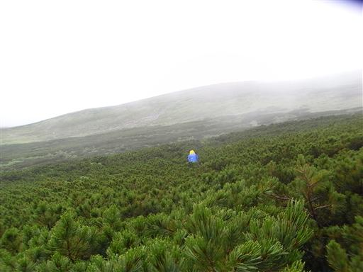
白いヨツバシオガマ。
赤色はよく見るが白色の花は珍しい。
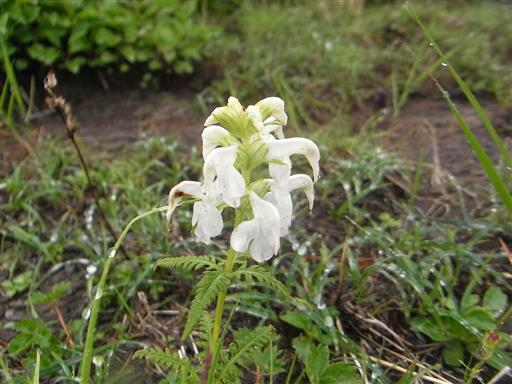
分岐点から化雲岳を目指す。
トムラウシに行くには巻き道もあるのだが、
この天気で展望は0でもとりあえず寄って行くことにする。
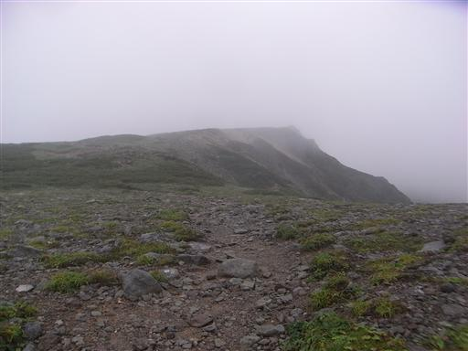
12:12 化雲岳山頂到着。標高1954m。
降り続く雨で、最近買い替えた靴も、ゴアの手袋も浸水してくる。
さすがにこれだけ雨が降りつづけると辛い。
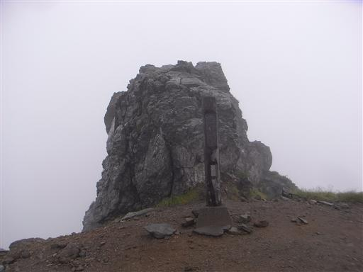
この辺りは池塘よりも池がたくさん見られる。
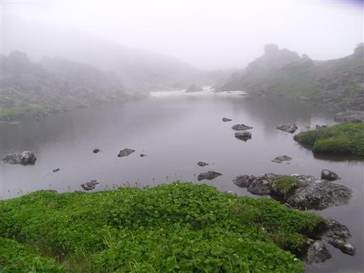
大きな岩が散乱している地帯を通過する。
視界がなく、踏み跡もほとんどなく、
岩に書かれているペンキがないとさっぱり道がわからない。
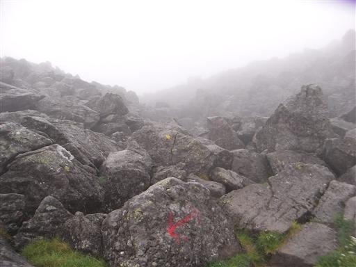
岩が積み重なる独特の風景だ。
この辺りではナキウサギの声が絶えずこだましている。
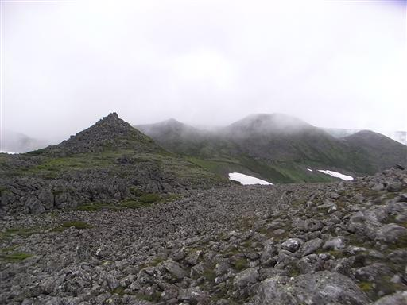
巨大な北沼。対岸が見えない。
今年のトムラウシ遭難事故時はこの沼の水があふれ出て川のようになっていたそうだ。
事故時に最初に低体温者が出たのはこの辺りのはずで、その場で全員待機。
もし皆が単独行だったらほとんどの人は無事下山できたはずで、そう考えると気の毒だ。
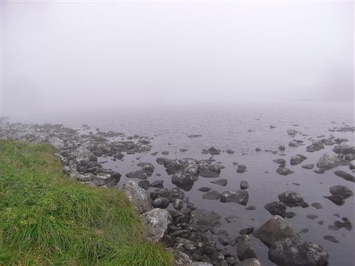
トムラウシに近くなり、傾斜が急になってくる。本日最後の登りだ。
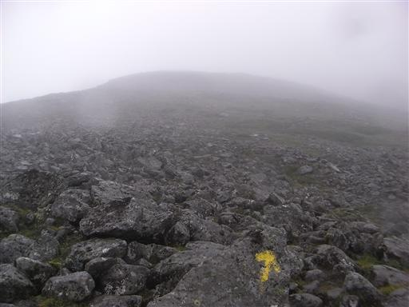
少し登ると大きな北沼の全体像が見えてくる。
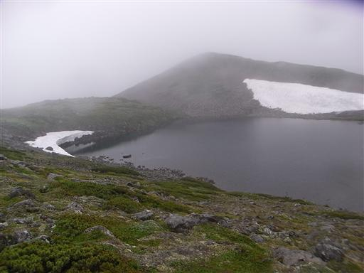
15:11 トムラウシ山頂到着。標高2141m。
多くの登山者があこがれる北海道の名峰だ。
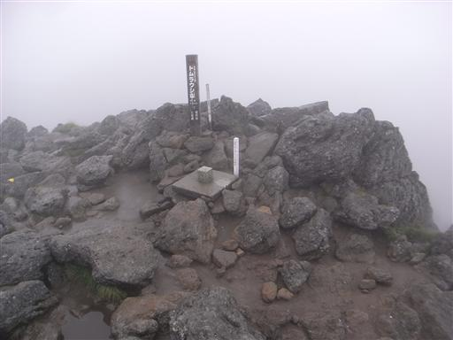
当然ここからの展望もなし。
岩がちな地形が続いていることだけはよくわかる。
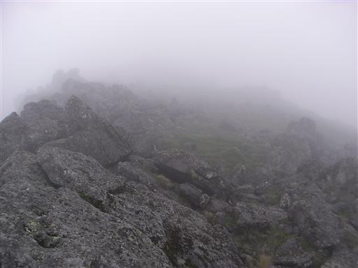
15:30 南沼キャンプ場到着。標高1970m。
割と早めに到着したつもりだったが、すでにいくつかのテントが張られている。
テントが水没しなさそうな高台を探してテントを張る。